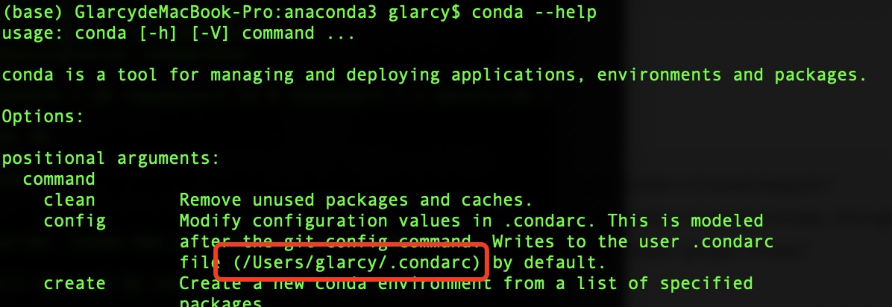
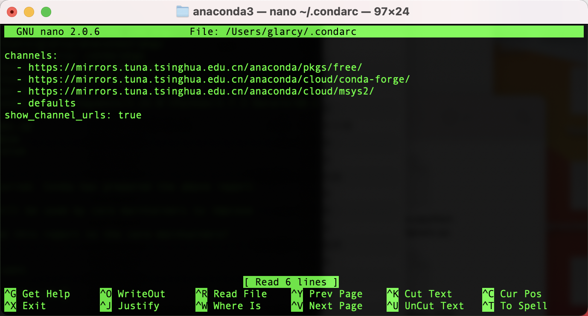

前言
Mac用户不要直接本机装！！！ubuntu装比较省事。
安装conda
有图形安装和命令行安装，我这里选择命令行安装
下载地址
官网（国外网站，下载较慢）
https://www.anaconda.com/products/individual
国内镜像
https://mirrors.tuna.tsinghua.edu.cn/anaconda/archive/
安装命令
1 | bash ~/Downloads/Anaconda3-2019.07-MacOSX-x86_64.sh |
安装tensorflow-gpu
下面记录一下安装tensorflow-gpu过程中遇到的问题
1 | conda install tensorflow-gpu |
报错
1 | Solving environment: failed with current_repodata.json, will retry with next repodata source. |
解决办法：换源
这里选择清华的，执行如下命令
1 | conda config --add channels https://mirrors.tuna.tsinghua.edu.cn/anaconda/cloud/msys2/ |
找到.condarc文件，如果不知道在哪可以通过如下命令查看
1 | conda --help |

查看.condarc文件，注意channels这里除了我们添加的清华源还有个-defaults
1 | conda config --show-sources |

执行
1 | conda search tensorflow-gpu |
依然报错
1 | Loading channels: failed |
解决办法：删除.condarc文件的-defaults
删除以后需执行以下命令，清除cache
1 | conda clean -i |
不报错了，但是发现我的源下面并没有tensorflow-gpu的相关版本包
后来，又发现mac目前仅支持python2.7、3.3-3.6的tensorflow-gpu版本
https://tensorflow.google.cn/install/source
而我的版本为3.7，于是
1 | 创建tensorflow-gpu运行环境 |
安装完之后发现导入tensorflow报错，查了一下好像是cuda,cudnn版本问题，但是在mac要安装这两个太麻烦了，我弃坑了转ubuntu了，ubuntu就不用这么多步骤，它
查看conda 环境信息
1 | conda info --envs |
If you’d prefer that conda’s base environment not be activated on startup, set the auto_activate_base parameter to false:
1 | conda config --set auto_activate_base false |
import tensorflow错误
1 | /home/glarcy/anaconda3/envs/tensorflow/lib/python3.6/site-packages/tensorflow/python/framework/dtypes.py:516: FutureWarning: Passing (type, 1) or '1type' as a synonym of type is deprecated; in a future version of numpy, it will be understood as (type, (1,)) / '(1,)type'. |
原因numpy版本太高
解决办法：将numpy换成1.16.0版本
1 | pip install numpy==1.16.0 |